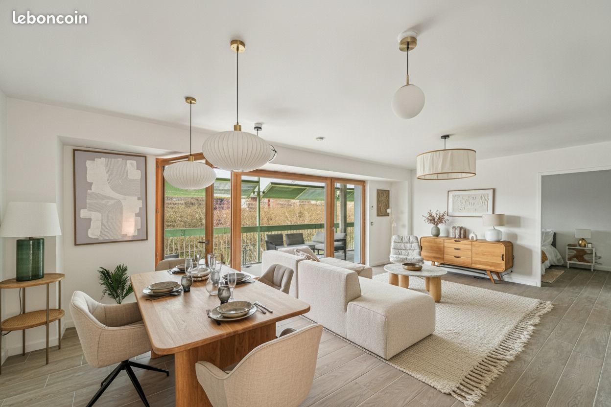
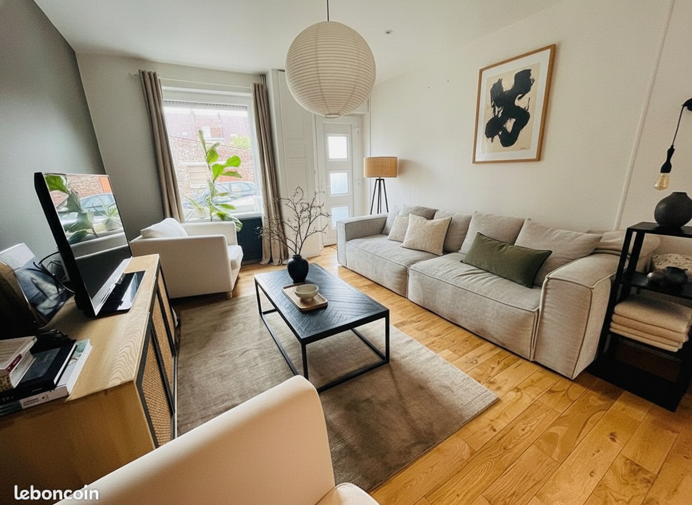
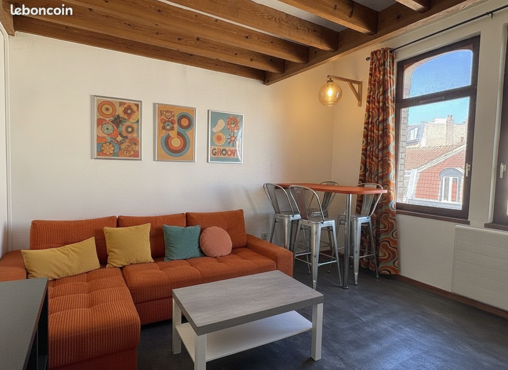
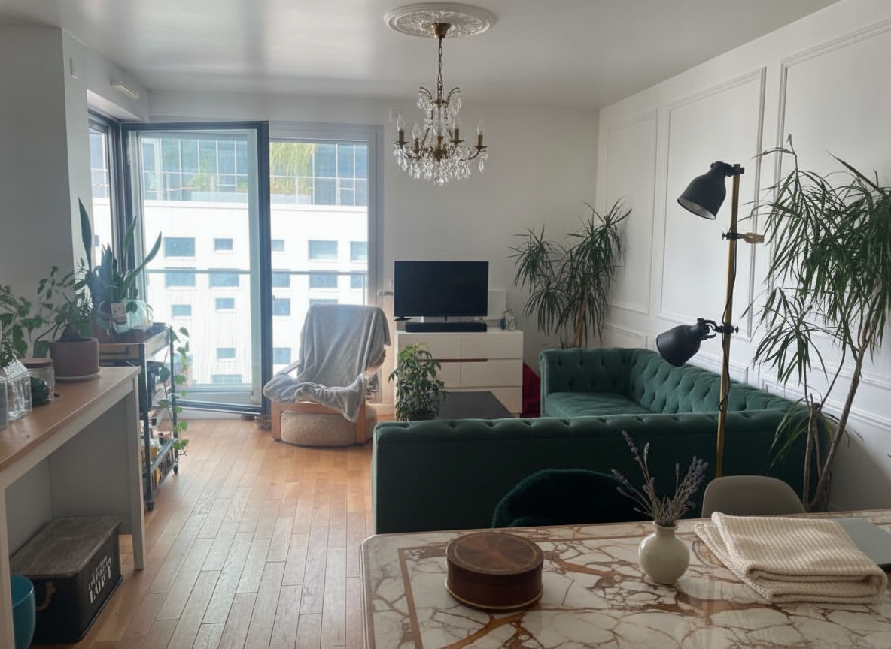
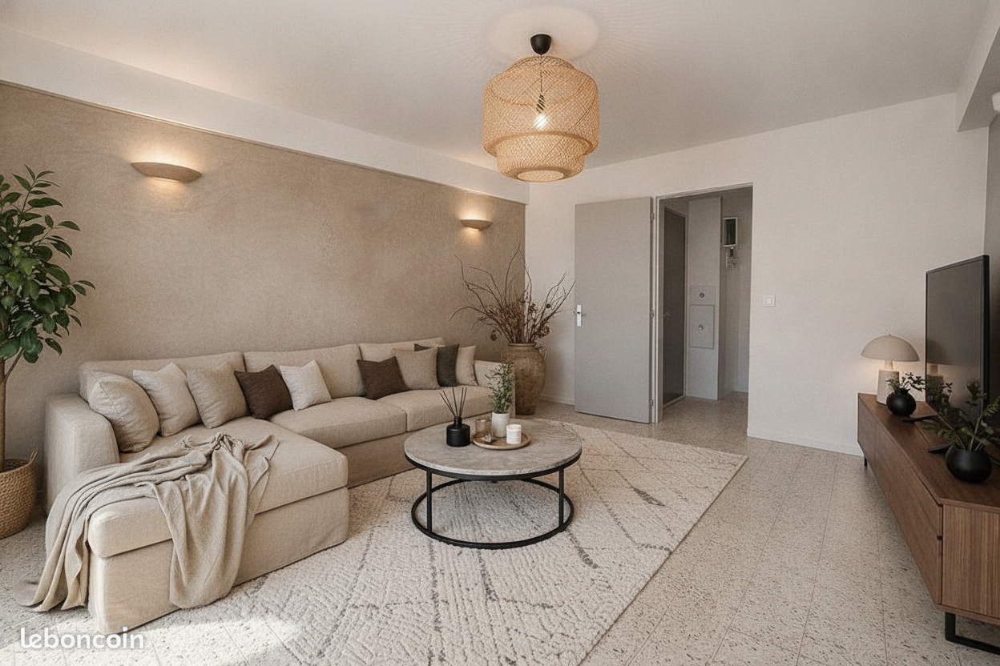
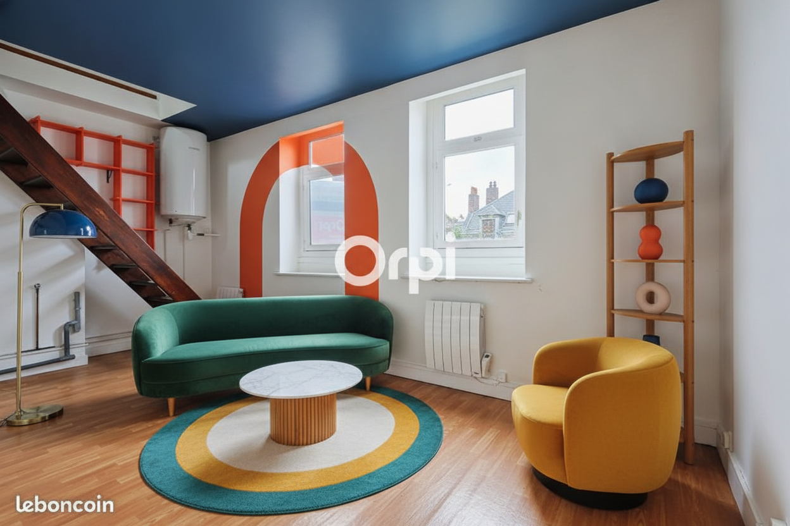
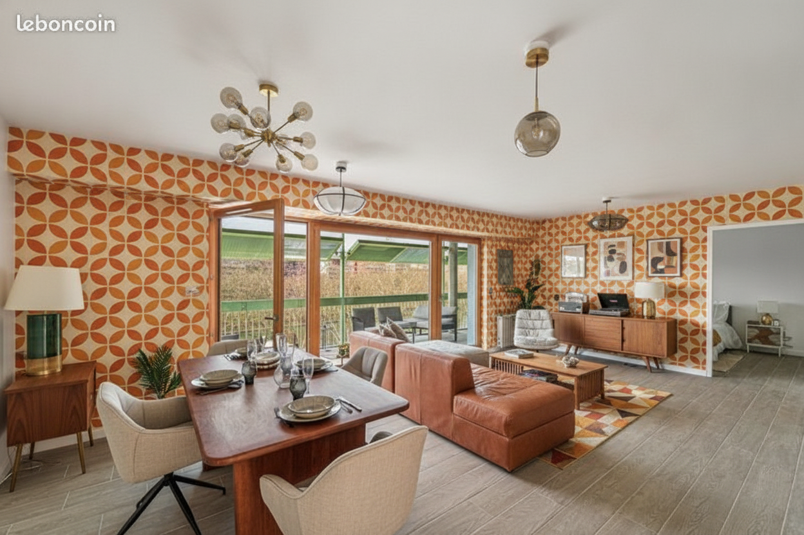
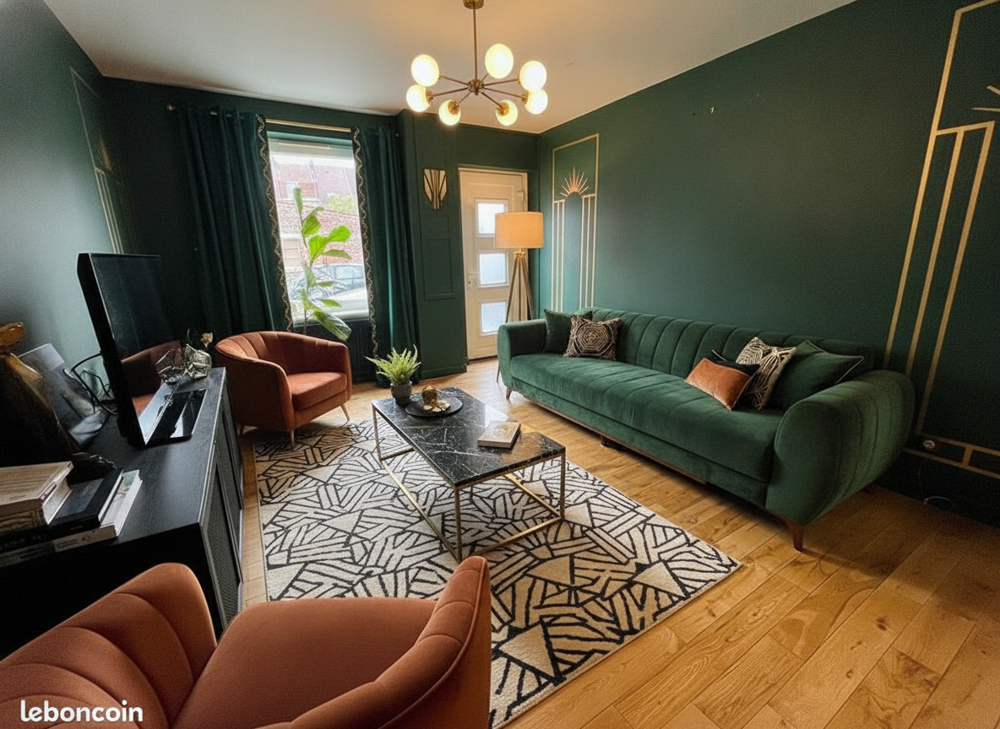
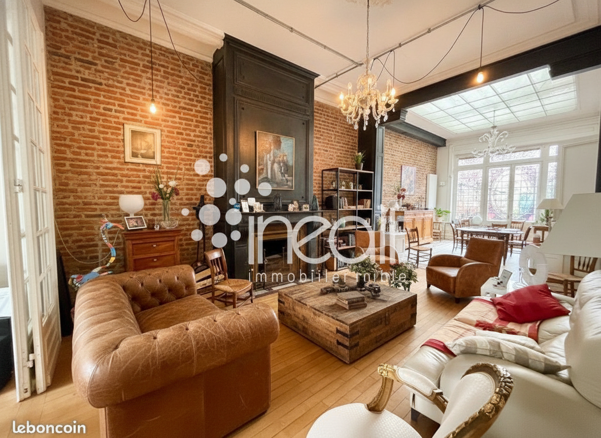

Original

Rendu DIY beta
156 décisions vérifiées : 137 conformes (88 %), 19 écarts, 0 color wash.

Le rendu applique la plupart des modifications demandées avec succès. Seul le tapis n'a pas été conservé comme prévu, mais remplacé par un modèle différent.


Le rendu applique globalement le plan, avec des remplacements réussis pour les coussins et le cadre mural. Cependant, le meuble TV n'a pas été restylé comme demandé, la plante a été remplacée au lieu d'être conservée, et le luminaire de plafond a été remplacé plutôt que restylé.
ERREUR: Nano Banana did not return an image. Raw: {"candidates":[{"finishReason":"IMAGE_OTHER","index":0,"finishMessage":"Unable to show the generated image. The model could not generate the image based on th


✓ toutes les décisions conformes
Le rendu a appliqué toutes les modifications demandées avec précision. Chaque élément a été transformé conformément au plan, sans aucun problème majeur.


Le rendu applique la majorité des changements demandés, notamment les restylages et remplacements majeurs. Cependant, plusieurs éléments n'ont pas été traités comme spécifié, soit par suppression au lieu de remplacement, soit par absence de restylage visible, et un luminaire a été ajouté au plafond.


Le plan a été globalement bien appliqué, avec la majorité des éléments correctement restylés ou conservés. Cependant, le canapé et le téléviseur n'ont pas été remplacés comme demandé, mais plutôt modifiés ou conservés.


⛔ architecture ajoutée/supprimée (shelf_1)
Le rendu présente des écarts importants par rapport au plan. L'escalier n'a pas été repeint dans la couleur spécifiée, et les étagères originales ont été supprimées et remplacées par un meuble différent à un autre emplacement, ce qui constitue un problème majeur.

Le rendu présente plusieurs écarts par rapport au plan, notamment le non-remplacement des chaises de salle à manger et un luminaire de plafond remplacé au lieu d'être restylé. Le reste des modifications a été appliqué correctement.

Le rendu applique globalement le plan de rénovation avec succès pour la majorité des éléments. Cependant, le meuble TV n'a pas été restylé avec l'effet cannelé et la couleur laquée noire spécifiés, ce qui constitue un écart mineur.


⛔ Murs transformés (plâtre/peinture vers brique apparente) — Poutre ajoutée au plafond — Cheminée restylée/remplacée de manière significative
✓ toutes les décisions conformes
Le rendu introduit des changements architecturaux majeurs (murs en brique, poutre au plafond) et remplace la plupart du mobilier. Le plan étant vide, l'attente implicite était de ne rien modifier, ce qui a été massivement ignoré.